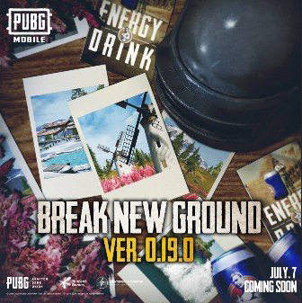

PUBG Mobile will soon be getting a new update that will bring in a couple of new features. The PUBG Mobile 0.19.0 update will rollout on July 7, the company announced via its official Twitter handle. Some of the new features include a new map named Livik, a couple of bug fixes, and more.
PUBG Mobile 0.19.0 Update It should be noted that the Twitter post doesn't reveal much information apart from the date of the update. However, there were several teasers about the Livik map, which is going to be the first PUBG Mobile exclusive map so far. All the other maps first debuted in the PC or console version. The new map will be added to the regular version of the game, allowing users to explore new areas. Presently, the Livik map on PUBG Mobile is available in the beta version as the 'secretmap'. From the beta version, we know that the Livik map is 2km by 2km in size and will bring quick matches with a maximum of 40 players in a match.
On July 7th, update 0.19.0 launches along with the first-ever PUBG MOBILE exclusive Map Livik 🏔️. Are you ready to face this new challenge head-on?
— PUBG MOBILE (@PUBGMOBILE) June 29, 2020
Get in on the action now 👉 https://t.co/Lvgc5q4obP pic.twitter.com/TdYg2fjxM1
The Livik map on the PUBG Mobile is also said to include areas like a volcano, waterfall, a hot spring, and more. The waterfall in the Livik map is probably one of the most unique features, as it isn't present in other maps. Additionally, the map will add two new weapons, namely the P90 submachine gun and the MK12 burst sniper rifle.
Apart from the Livik map, another highly anticipated map is Erangle 2.0. However, it's uncertain if the Erangle 2.0 map will arrive with the PUBG Mobile 0.19.0 update. The latest reports note that Erangle 2.0 is currently in the final stages of development and is expected to launch in the second half of 2020. This also means that it's unlikely that the Erangle 2.0 will make it to the PUBG Mobile 0.19.0 update coming on July 7.